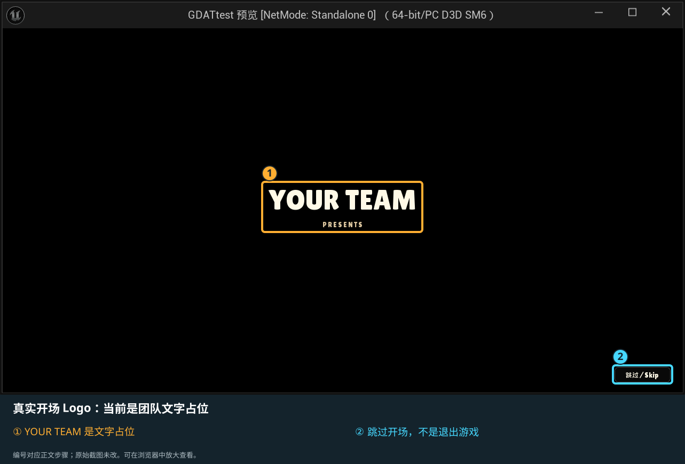
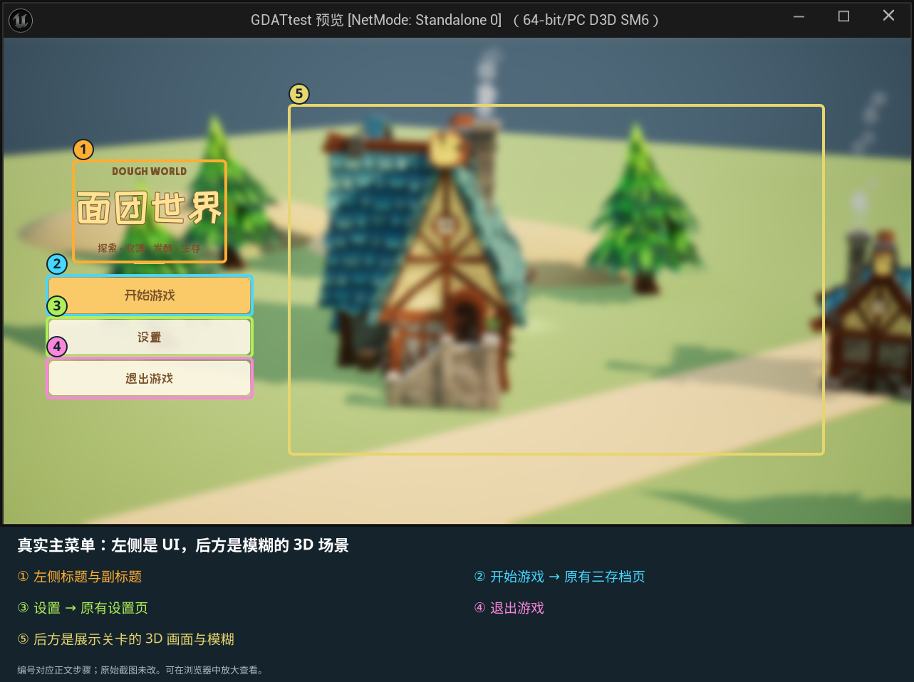
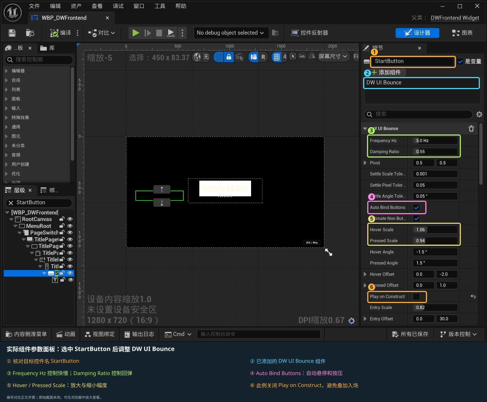

<!doctype html><html lang="zh-CN"><meta charset="utf-8"><title>主菜单与弹跳组件截图指引</title><style>body{font:17px/1.7 "Microsoft YaHei",sans-serif;color:#20323d;background:#edf1f3;margin:0;padding:24px}main{max-width:1500px;margin:auto}section{background:white;padding:18px;margin:24px 0;border-radius:10px}img{max-width:100%;height:auto}a{color:#146d8c}</style><main><h1>主菜单与弹跳组件：真实截图编号指引</h1><p>仅叠加编号框。原始 PNG 及界面内容不改动。</p><section><h2>开场第一阶段：黑幕</h2><p>右下角保留跳过按钮；黑幕是开场流程的一部分。</p></section><section><h2>真实开场 Logo：当前是团队文字占位</h2><p><a href="02_Logo_annotated.svg">打开标注大图</a> · <a href="originals\02_Logo_Preview.png">查看原图</a></p></section><section><h2>真实主菜单：左侧是 UI，后方是模糊的 3D 场景</h2><p><a href="03_MainMenu_annotated.svg">打开标注大图</a> · <a href="originals\03_MainMenu.png">查看原图</a></p></section><section><h2>实际组件参数面板：选中 StartButton 后调整 DW UI Bounce</h2><p><a href="04_BounceDesigner_annotated.svg">打开标注大图</a> · <a href="originals\04_BounceDesigner.png">查看原图</a></p></section></main></html>